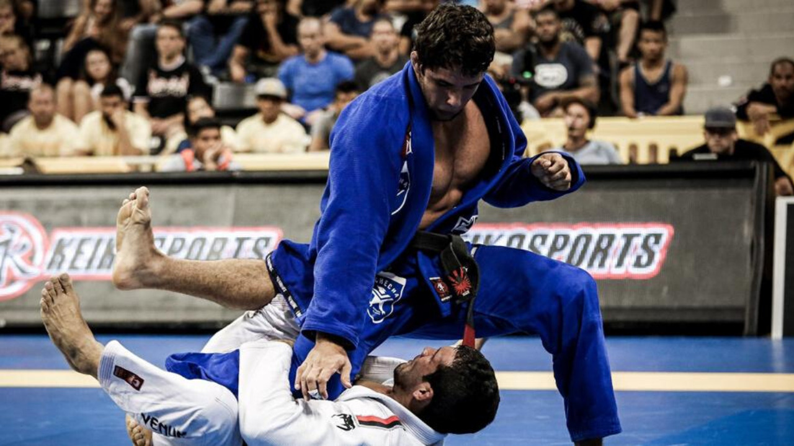
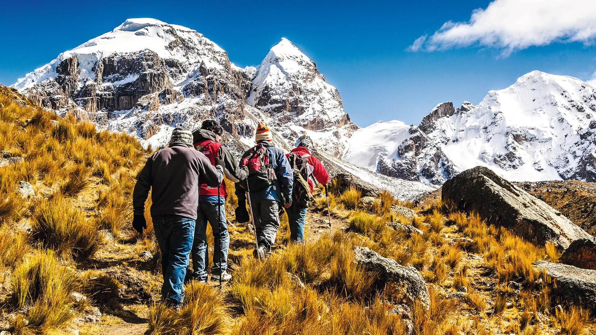

- Fecha de nacimiento: 23/12/1998
- Cédula: 20.003.705-7
- Nacionalidad: Chilena
- Email: Felipeguzmanvega5@gmail.com
- Dirección: Diputada Laura Rodriguez #7202
- Teléfono: +56928242610
- Edad: 25 Años
Mi descripción profesional es utilizar mis habilidades organizativas y mi atención al detalle para optimizar los procesos y contribuir al crecimiento de la empresa. Me enfoco en mejorar mis conocimientos y habilidades en el manejo de equipos de sistemas, con el objetivo de implementar prácticas innovadoras que impulsen la productividad y buscar oportunidades de crecimiento profesional dentro de la empresa.
- Escolaridad Básica: Colegio Tobalaba (MAR 2000 - DIC 2008)
- Escolaridad Media: Liceo Jovina Naranjo (MAR 2008 - DIC 2012)
- Educación Superior: Instituto INACAP (Actualmente: FRB 2023)
- Soldado De Tropa Ejército de Chile: (2017 - 2022)
- Bodeguero Tienda Ripley: (OCT 2023 - FBR 2024)
- Anfitrión Clínica UC Christus: (FRB 2024 - MAR 2024)
- Practicar BJJ Brasileño 
- Ir al GYM

- Hacer Trekking 